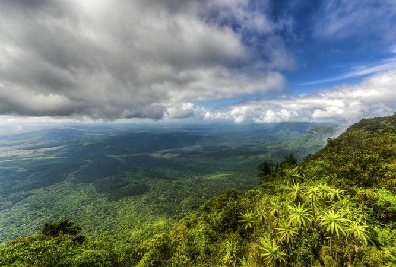
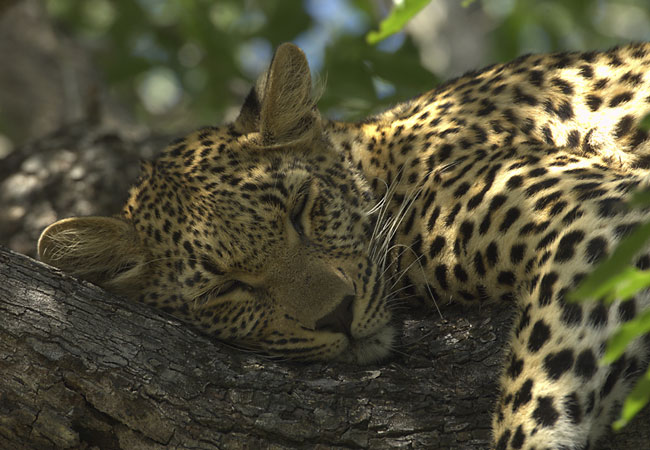

The Kruger Park, with its big five, the Lion, Buffalo, Elephant, Rhino
and Leopard are the main attractions of this province. But Mpumalanga
also offers a great diversity in nature, with citrus plants and
mountain ranges.
 
Above are some images of "Gods Window". A leopard in the Kruger National
Park. And some of the numerous activities such as fishing.